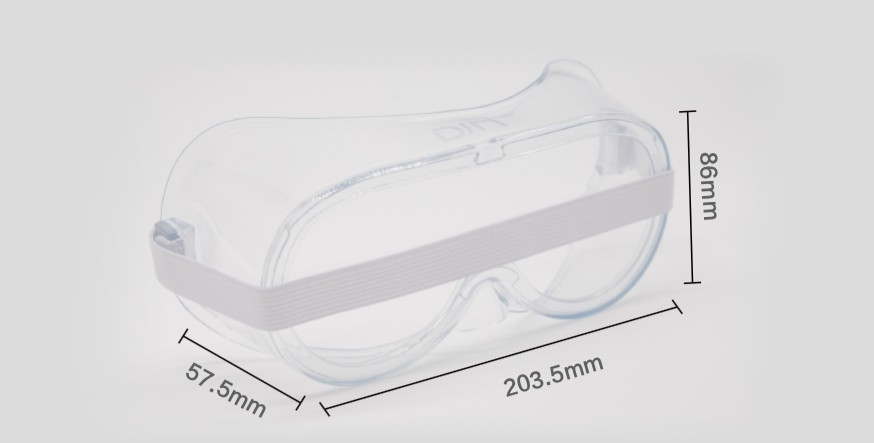
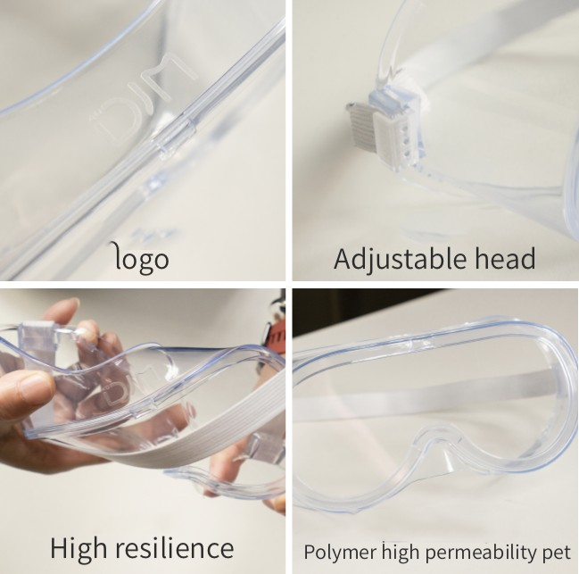
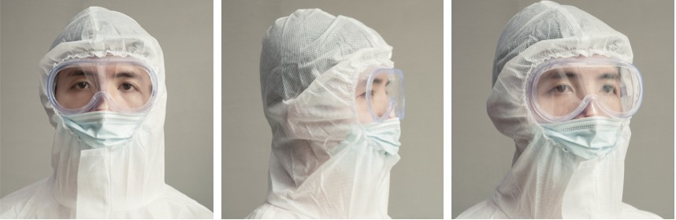
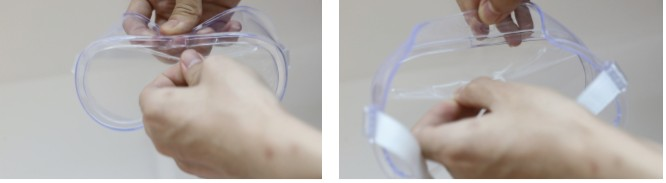

Isolation Eyes Cover
At present, there are 4 major areas of IoT instrument design: skin management, technology health, postpartum repair, technology fitness; in addition to this, based on AI skin detection technology, skin tester and intelligent beauty mirror are launched
Features
It consists of a protective cover, foam strip and fixing
German black technonoly instrument for rehabilitation and beauty the vision 4.0 in hall of DJM is highly-admired,the first day of the exhibition attracted more than ten thousand people to visit the consultation.
✓ No fog
✓ Anti-spray
✓ Anti-dust
✓ Anti-UV
✓ Shockproof
Product display
Wearable display
Specifications
Product Size: 203.5*57.5* 86mm
product weight: 51.5g
Packaging configuration: Certificate 1 Instruction
Number of inner boxes: 20
FCL quantity: 200
FCL net weight: 10.3kg
FCL gross weight: 13.78kg
Carton size: 925*355*455mm
type of certificate: CE/FDA/CFDA
Instructions Double-sided tear film
1、Unpack the inner packaging, remove the isolation mask product, and remove the protective film on both sides.
2、After the two ends of the foam strip (commonly known as elastic band) are fastened, wear it on the forehead to adjust it comfortably.
